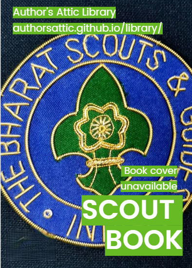

Scout & Guide
APRO-Part 2

The book was originally a manual for self-instruction in observation, tracking and woodcraft skills as well as self-discipline and self-improvement, about the Empire and duty as citizens with an eclectic mix of anecdotes and unabashed .
Scout & Guide
Rovering To Success
Illustrated by the Author. Contents: Preface; How to Be Happy Through Rich or Poor; Rocks You are Likely to Bump on; Rovering. 'To sum up in a few words, success does not consist so much in gaining money and power as in gaining happiness. Many young men drift along with the rest of the crowd according to chance, and thus never reach happiness.